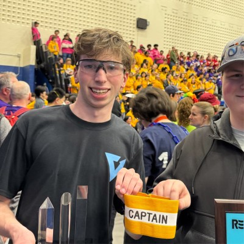

About Me
I’m a first-year student at Queen’s School of Computing in Kingston, studying Computing (Honours) in Computer Science. I’m pursuing the Software Design specialization and a Geography (Science) minor. I’m originally from London, Ontario, and when I’m not at a keyboard I’m usually out on a hiking trail.

Courses
- CISC 102 — Discrete Structures I
- CISC 121 — Introduction to Computing Science I
- ENIN 140 — Design Thinking
- GEOL 106 — Environmental Geology and Natural Hazards
- GPHY 101 — Human Geography
Contact
Email: o.shaule@queensu.ca
LinkedIn: linkedin.com/in/oshaulz
Website: oshaule.me